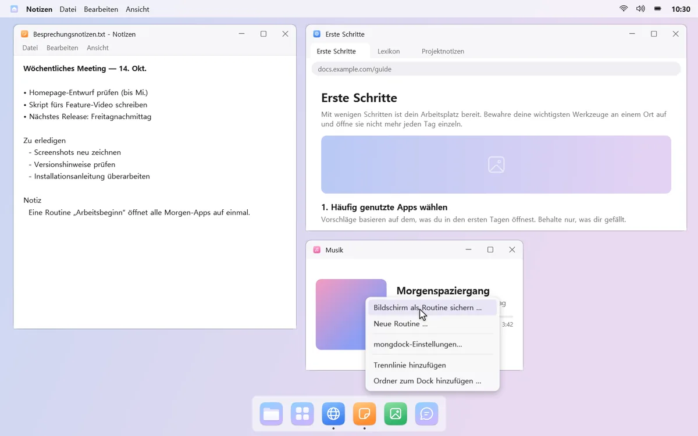
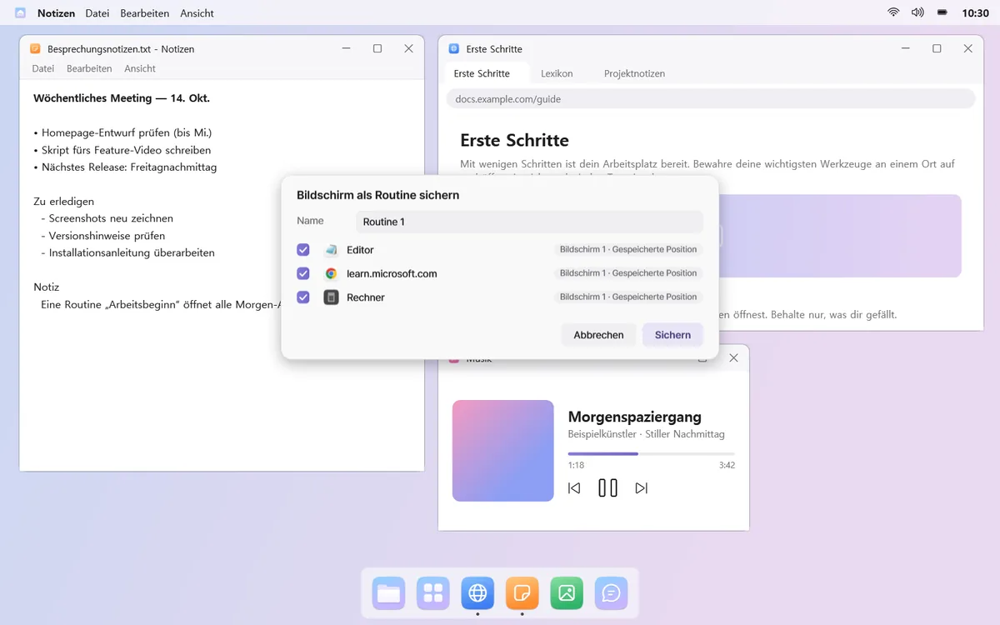
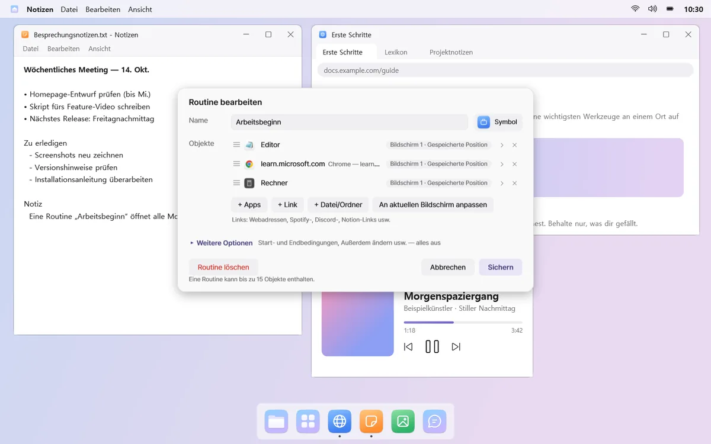
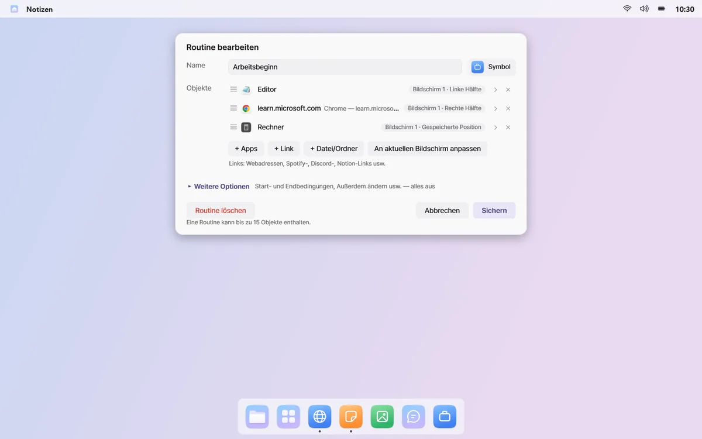
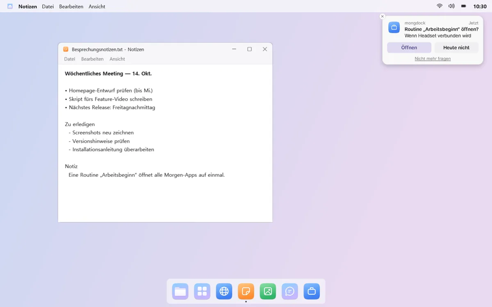

Deine Alltags-Apps in einem Rutsch öffnen
Fass die Apps, Links und Spiele, die du zusammen nutzt, in einer Routine zusammen. Ein Klick, und sie öffnen sich auf einem neuen Desktop, jede an ihrem Platz. Beendest du sie, schließen sich nur diese Fenster.
Klick zum Beispiel auf „Arbeitsbeginn“, und Mail, Browser und Dokumente öffnen sich auf den Bildschirmen und Plätzen, die du gewählt hast.
Alles öffnet sich, wo es hingehört
Klick auf eine Routine, und ein neuer virtueller Desktop öffnet sich mit jeder App auf dem gewählten Bildschirm und Platz – ob Vollbild oder linke Hälfte. Die Menüleiste zeigt den Namen der Routine und auf Wunsch auch, wie lange du schon dort bist.


Den aktuellen Bildschirm sichern
Ordne deine Fenster, wie du magst, und wähl „Bildschirm als Routine sichern …“. Fertig. mongdock bemerkt auch Apps, die du oft zusammen öffnest, und schlägt eine Routine vor.




Apps, Links und Spiele
Misch Apps, Links mit mehreren Tabs und Dateien oder Ordner in einer Routine. Auch Spiele und Launcher von Steam, Epic oder GOG starten, sobald die Routine öffnet.

Sie fragt im richtigen Moment
Schließ ein Headset oder einen Bildschirm an, schalte den PC ein, erreiche einen festgelegten Tag und eine Uhrzeit oder starte eine bestimmte App – und mongdock fragt: „Öffnen?“ Pro Bedingung höchstens einmal am Tag. Standardmäßig öffnen sich Routinen nur per Klick.

Genauso sauber beenden
„Routine beenden“ schließt nur die Fenster, die die Routine geöffnet hat, und lässt alles andere in Ruhe. Hat die Routine Tonausgabe, Lautstärke, „Nicht stören“ oder das automatische Ausblenden des Docks geändert, wird das beim Beenden zurückgesetzt.
Start- und Endbedingungen und weitere Optionen findest du im Editor unter „Weitere Optionen“, anfangs alle aus.
Gut zu wissen
- Apps mit nur einem Fenster (etwa Discord) werden nicht erneut geöffnet, wenn sie schon laufen. mongdock sagt dir, auf welchem Desktop sie sind.
- Fenster, die fragen, ob gespeichert werden soll, bleiben beim Beenden einer Routine offen.
- Startet mongdock nach dem Öffnen einer Routine neu, weiß es nicht mehr, welche Fenster die Routine geöffnet hat – diese musst du dann selbst schließen.